Automatic Transmission/Transaxle
TCM electrical componentsSpeed sensor, output shaft, transmission casing (533)

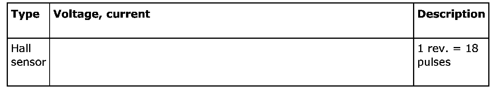
Speed sensor, input shaft, transmission casing (532)
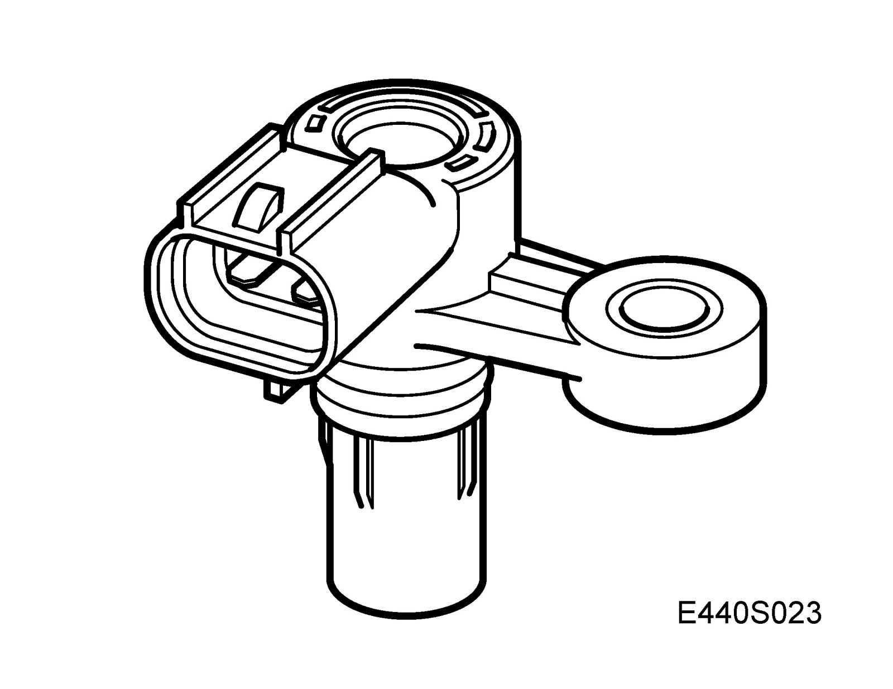
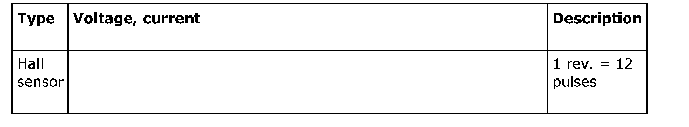
Transmission fluid temperature sensor (535)

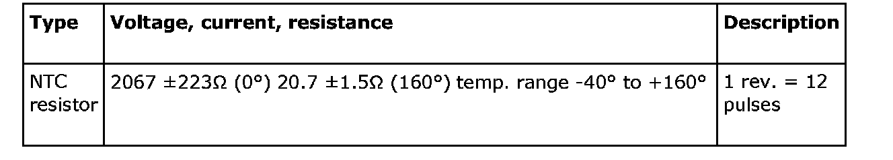
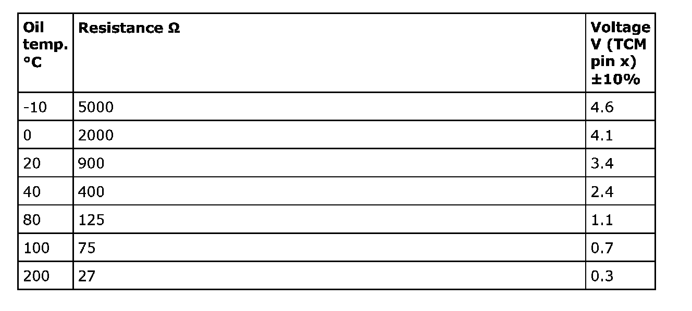
Shift solenoid, S1-S5 (531)

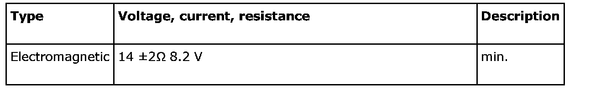
Oil pressure solenoid, SLU (531)

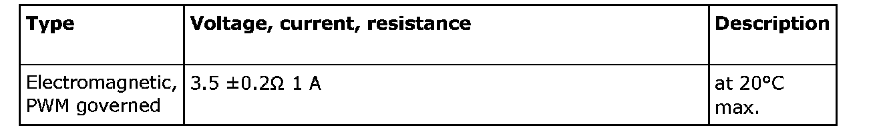
Oil pressure solenoid, SLS (531)
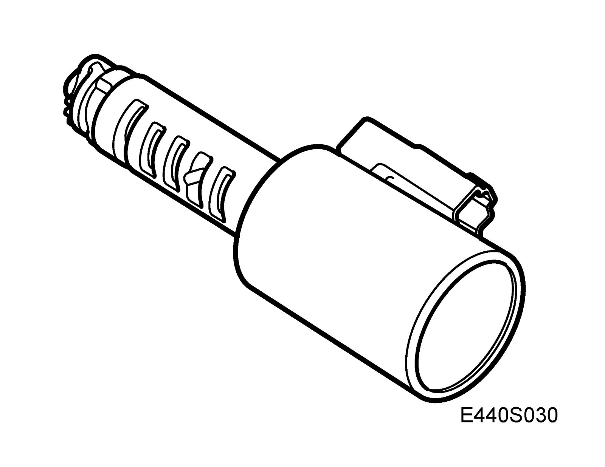
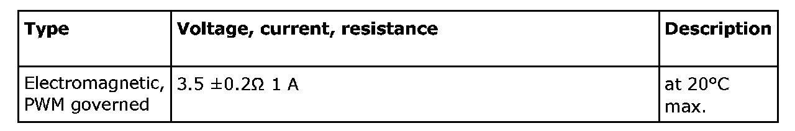
System pressure solenoid, SLT (531)
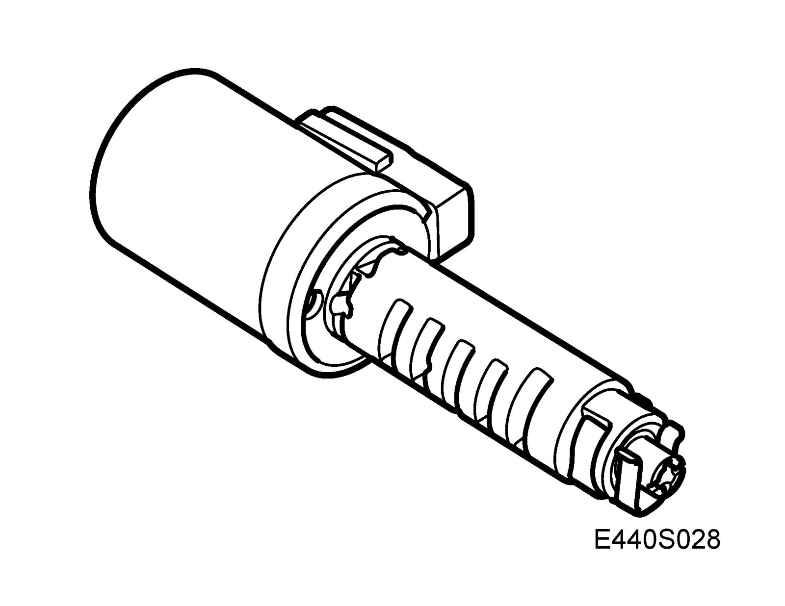
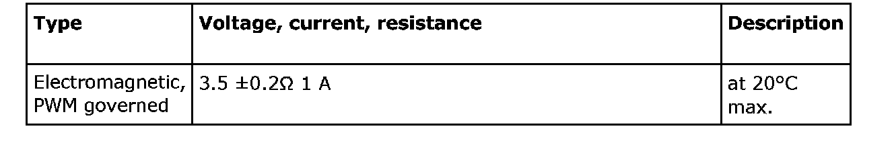
Transmission range switch, automatic (245)

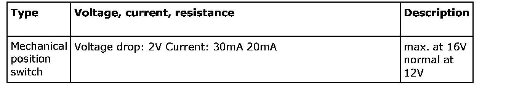
Lamp, selector lever position indicator illumination (91)
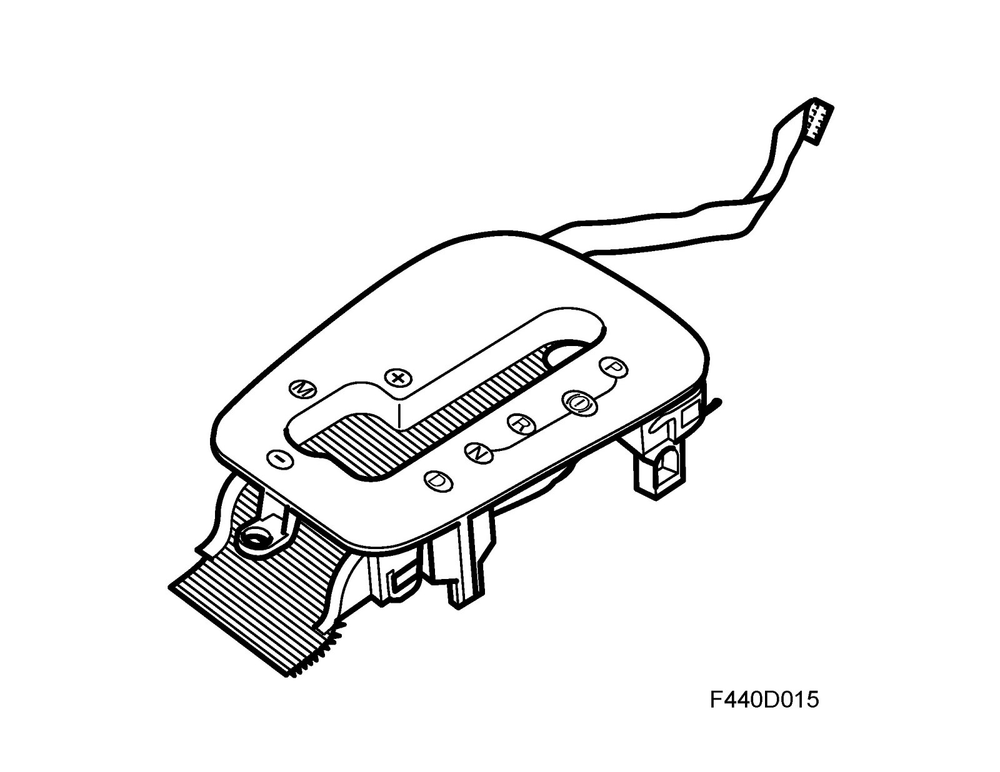
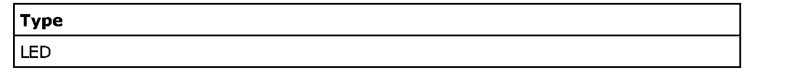
Switch unit, steering wheel (633)
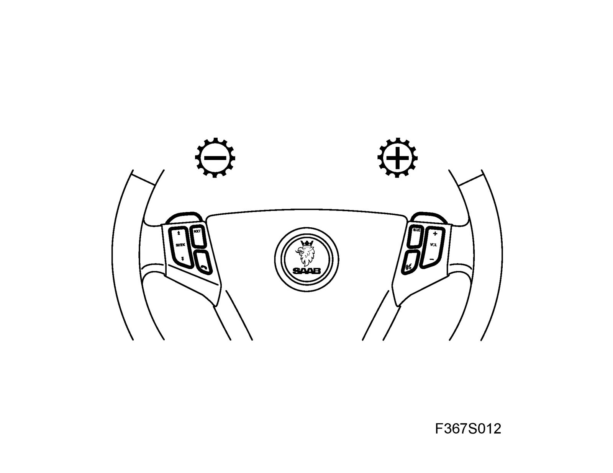
Gear selector control module (726)

Control module, TCM (502)
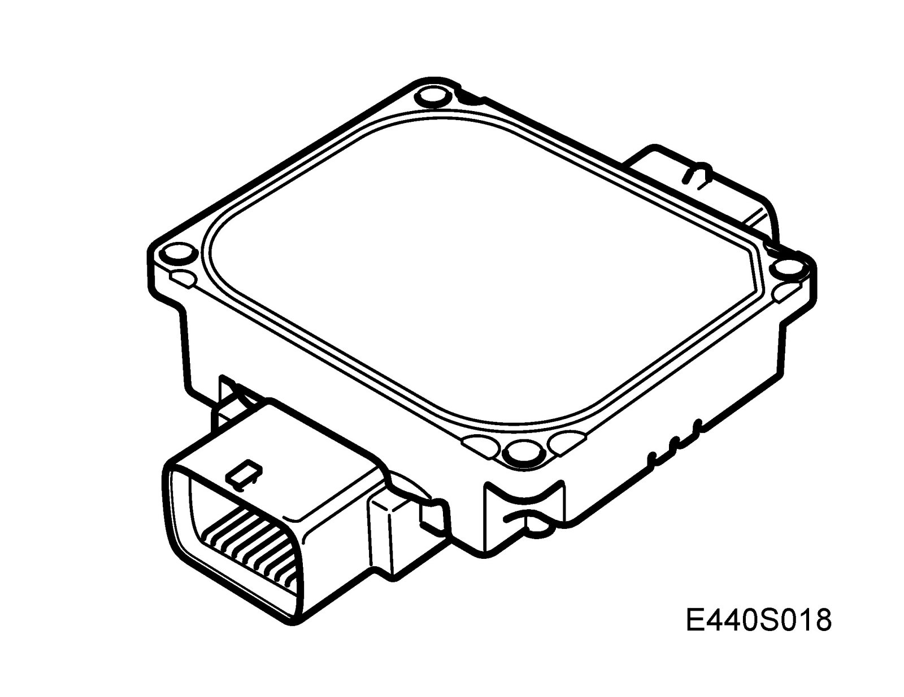
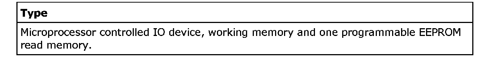